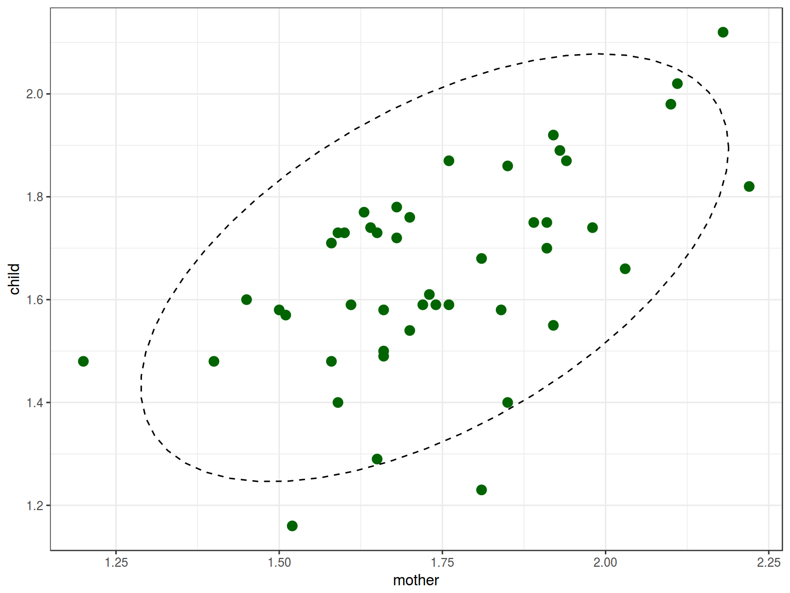
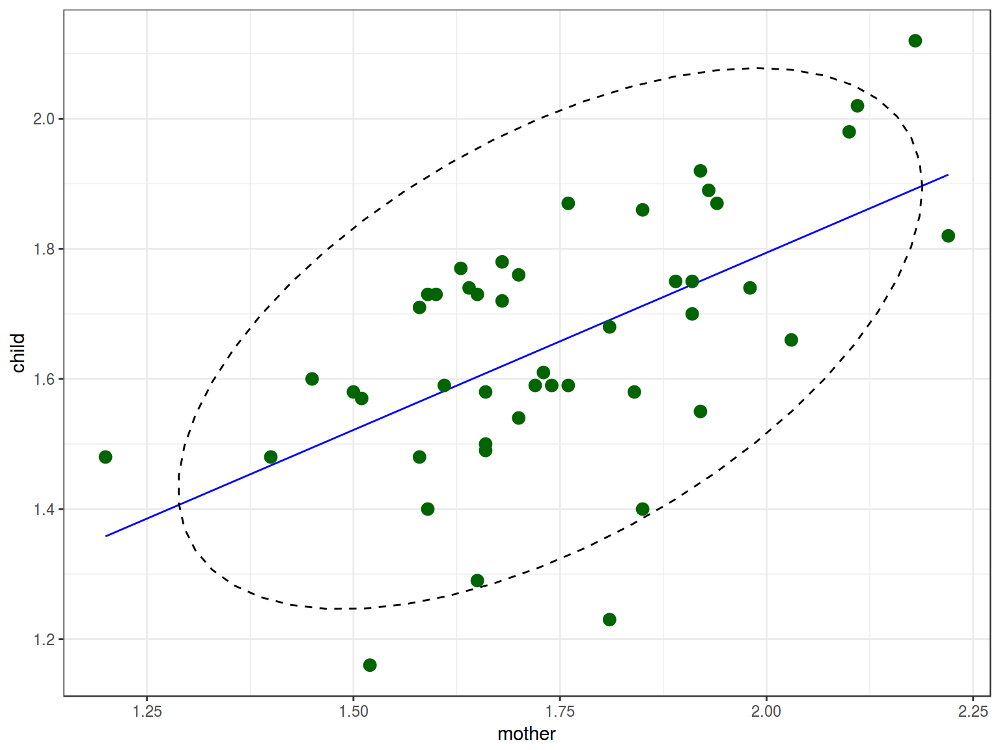
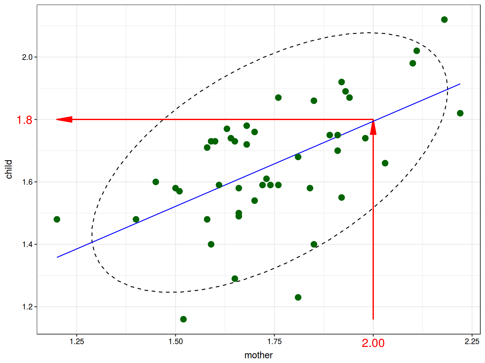
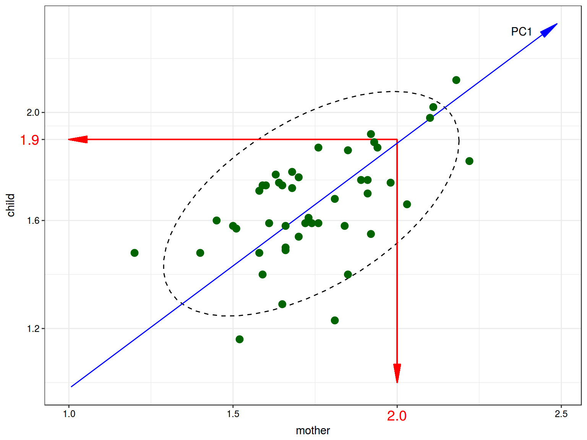
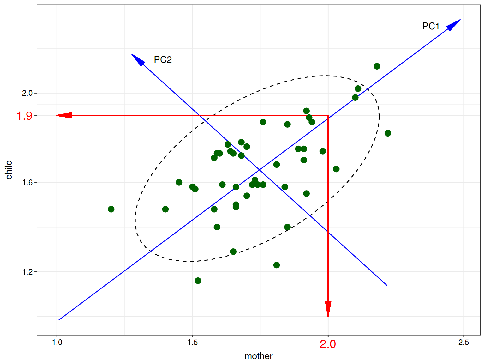
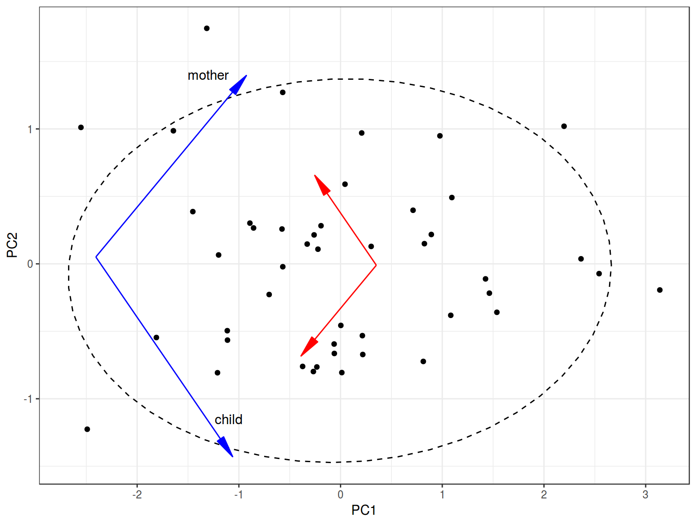
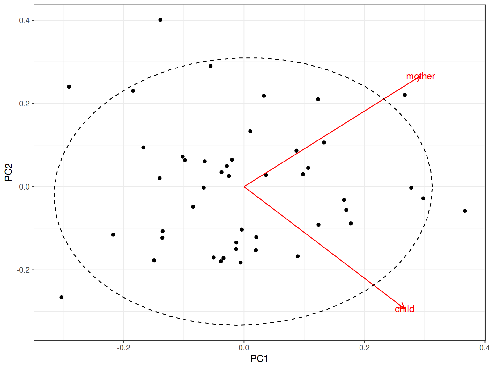

1. Main problem
Sometimes you have a huge amount of variables. So to make some profits from your data you need to reduce number of variables saving the information that in our data.
- Principal component analysis (PCA)
- Linear discriminant analysis (LDA)
- Multidimensional scaling (MDS)
- …
2. Data
I will use a dataset from [Huttenlocher, Vasilyeva, Cymerman, Levine 2002]. Authors analysed 46 pairs of mothers and children (aged from 47 to 59 months, mean age – 54). They recorded and trinscribed 2 hours from each child day. During the study they collected number of noun phrases per utterance in mother speech to the number of noun phrases per utterance in child speech. 
3. PCA
PCA is essentially a rotation of the coordinate axes, chosen such that each successful axis captures as much variance as possible. We can reduce 2 dementions to one using a regression:

We used regression for predicting value of one variable by another variable.

In PCA we change coordinate system and start predicting variables’ values using less variables.

So the blue line is the first Princple Component (and it is NOT a regression line). The number of the PCs is always equal to the number of variables. So we can draw the second PC:

So the main point of PCA is that if cumulative proportion of explained variance is high we can drop some PCs. So we need know the following things:
- What is the cumulative proportion of explained variance?
## Importance of components%s:
## PC1 PC2
## Standard deviation 0.2544 0.1316
## Proportion of Variance 0.7890 0.2110
## Cumulative Proportion 0.7890 1.0000
So PC1 explains only 78.9% of the variance in our data.
- How PCs are rotated comparing to the old axes?
df <- read.csv("http://goo.gl/Qo3Yy2")
prcomp(df)
## Standard deviations (1, .., p=2):
## [1] 0.2543899 0.1315688
##
## Rotation (n x k) = (2 x 2):
## PC1 PC2
## child 0.6724959 -0.7401009
## mother 0.7401009 0.6724959
So the formula for the first component rotation is \[PC1 = 0.6724959 \times child + 0.7401009 \times mother\] The formula for the second component rotation is \[PC2 = -0.7401009 \times child + 0.6724959 \times mother\]
From now we can change the axes:

The autoplot() function from ggfortify package produces nearly the same graph: 
Summary:
- If the cumulative proportion of explained variance for some PCs is high, we can change coordinate system and start predicting variables’ values using less variables.
- We can even make a regresion or clusterisation model.
- PCA for categorical variables is called Multiple correspondence analysis (MCA)